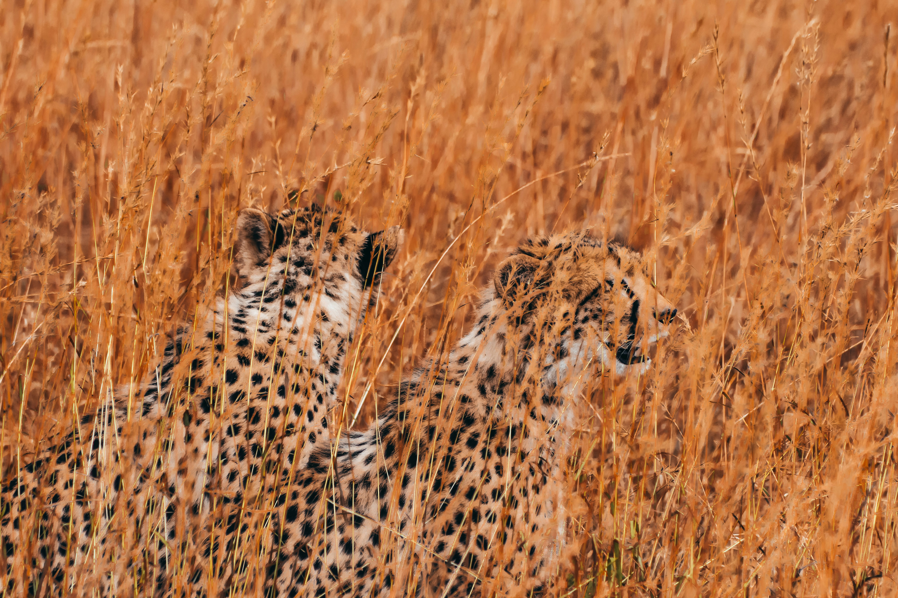
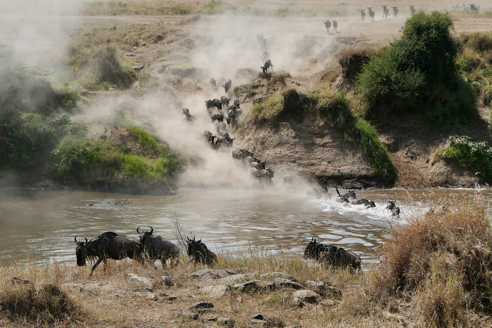
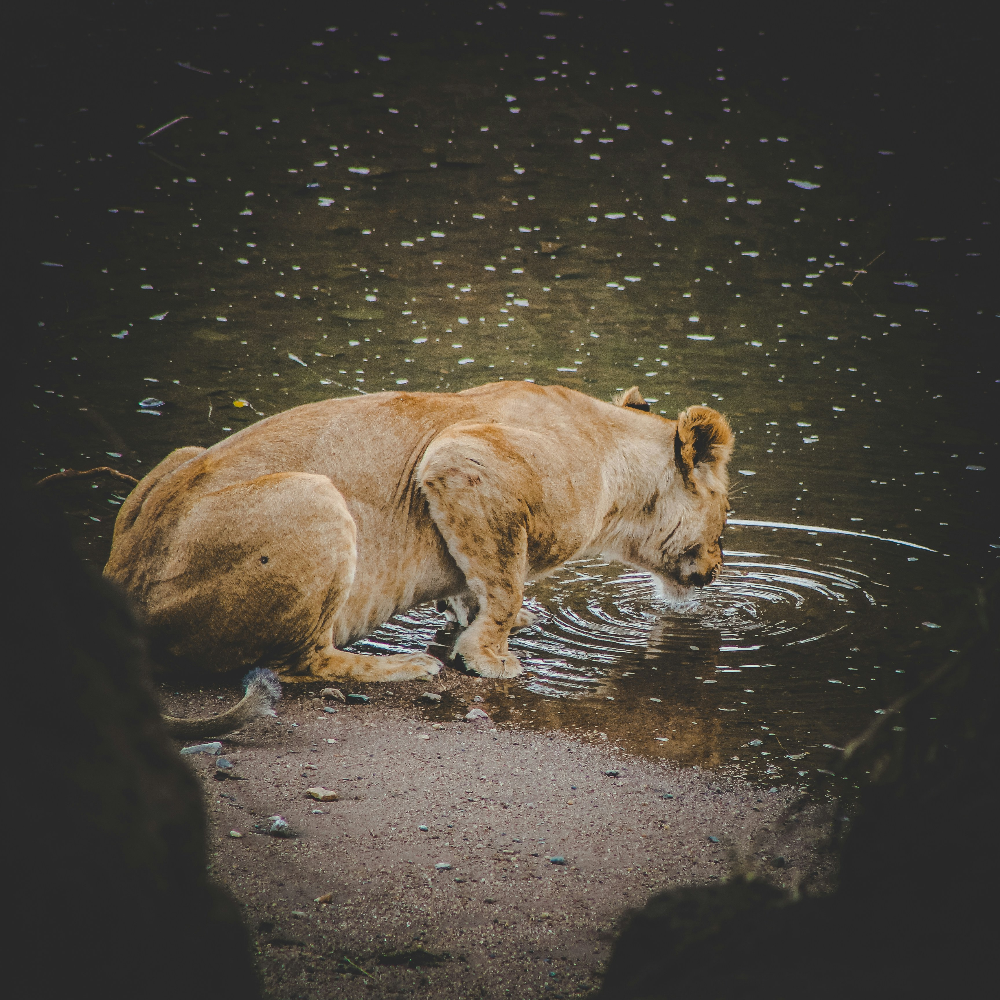
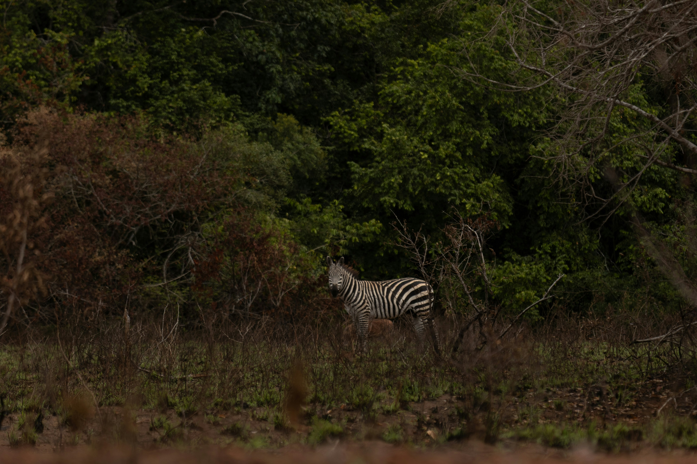
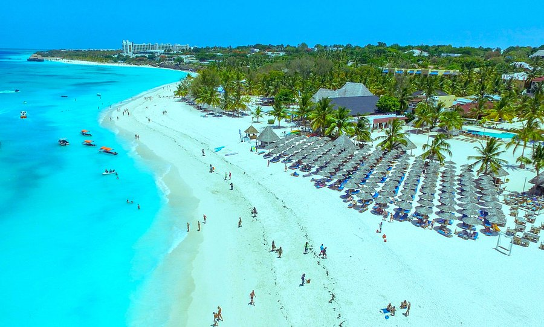

search
language
Where the wild runs free in East Africa's safari capital
In the shadow of Mount Kenya, this legendary safari destination captivates with the Great Migration and diverse wildlife reserves – offering unparalleled African adventures.
"We were seasoned safari-goers, but Kenya still managed to take our breath away," wrote a recent traveller. "Watching thousands of wildebeest cross the Mara River, then returning to our camp for sundowners – it was pure magic. Every connection worked flawlessly, from our internal flights to our expert guides."
The same visitor described unforgettable wildlife moments: "Having a pride of lions walk within feet of our vehicle in the Masai Mara is something I'll treasure forever. This is authentic Africa at its best."
Kenya consistently exceeds expectations. "We had to keep reminding ourselves this was real," wrote a first-time safari-goer. "The landscapes we'd only seen in documentaries were now right before our eyes."
Kenya leaves a lasting impression with its commitment to conservation and community-based tourism, offering visitors both spectacular wildlife and meaningful cultural exchanges.
A Kenyan safari takes you through an incredible variety of ecosystems – from the acacia-dotted savannahs of the Masai Mara to the snow-capped peaks of Mount Kenya, from the flamingo-filled lakes of the Great Rift Valley to the pristine beaches of the Indian Ocean coast.
Witness the awe-inspiring Great Migration as millions of wildebeest and zebra traverse the plains, watch elephants gather at waterholes in Amboseli with Kilimanjaro as backdrop, and encounter rare species in the remote northern frontier districts.
Kenya's diverse safari regions and coastal areas naturally group into four main circuits.
Kenya's most famous safari area encompasses the world-renowned Masai Mara National Reserve, alongside the stunning Amboseli National Park with Kilimanjaro views, Tsavo National Parks, and the scenic Lake Nakuru – home to flamingos and rhinos.
For exclusive wilderness experiences, Kenya's northern regions offer vast conservancies and unique wildlife. The Laikipia Plateau provides innovative community conservation, while Samburu National Reserve hosts rare species like the reticulated giraffe and Grevy's zebra.
The forested slopes around Mount Kenya offer excellent walking safaris and trout fishing, while Aberdare National Park provides unique tree hotel experiences with wildlife viewing from elevated platforms.
Kenya's stunning coastline features historic Swahili settlements, pristine beaches, and marine parks. From the ancient streets of Lamu Island to the coral reefs of Diani Beach, the coast offers perfect relaxation after safari.

Each of our holidays is as distinct as the traveller undertaking it. The itineraries here are just examples of what is possible, with costs and details; see all 25 Kenya safari ideas here.
you'll travel in a private 4WD with the same expert guide throughout, offering flexibility and continuity to your journey.
you'll fly between camps and lodges, exploring each wilderness area in open-top vehicles with experienced camp guides, alongside fellow travellers.
showcase Kenya's spectacular coastline and islands. Many travellers choose to unwind on our beautiful beaches before or after their safari adventure.
Call us now to speak to a Kenya expert who can address your questions and craft your perfect trip.

7 Days / 6 Nights
Experience the best of the Masai Mara with game drives in prime wildlife areas and cultural visits to Maasai communities.

8 Days / 7 Nights
Witness the spectacular river crossings and vast herds of the Great Migration in the Masai Mara.

9 Days / 8 Nights
Discover the remote conservancies of Laikipia and Samburu, home to rare species and innovative conservation.

8 Days / 7 Nights
Marvel at elephants with Kilimanjaro backdrop in Amboseli, then explore the vast wilderness of Tsavo.

10 Days / 9 Nights
Premium camps and lodges with seamless flights between the Masai Mara, Laikipia, and beach extensions.

12 Days / 11 Nights
Combine Masai Mara wildlife adventures with relaxation on Kenya's pristine Indian Ocean beaches.
Explore Kenya's premier wildlife destinations and their unique characteristics
Visit our trip chooser to explore your options and find inspiration for your perfect African adventure